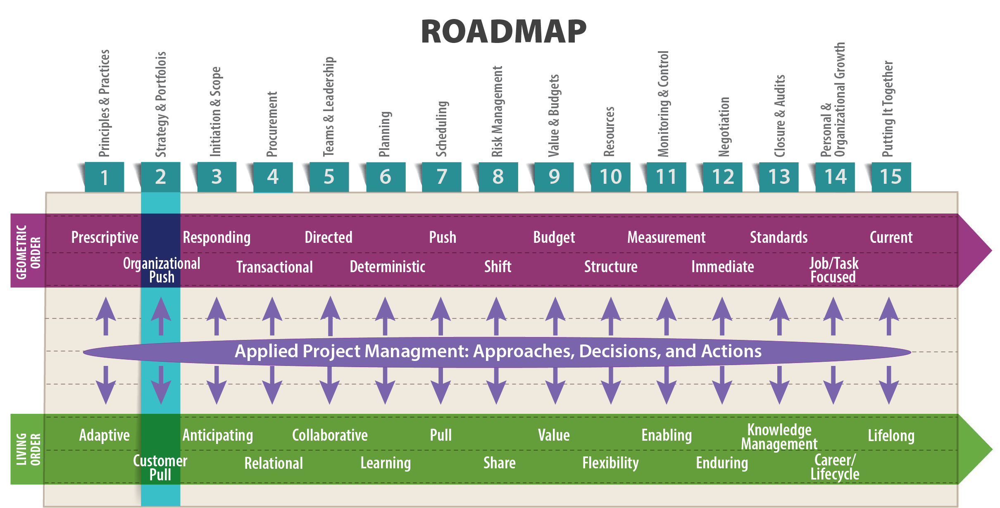
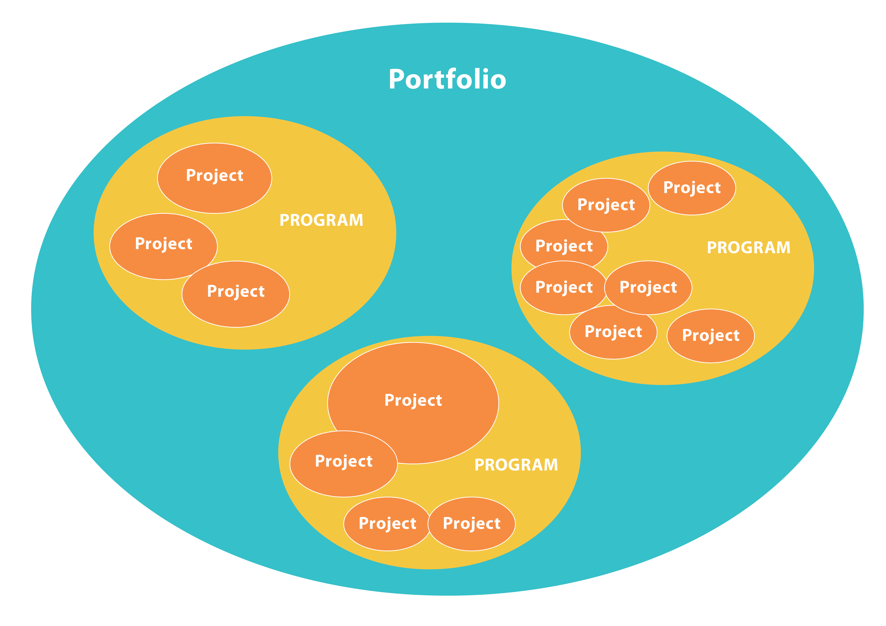
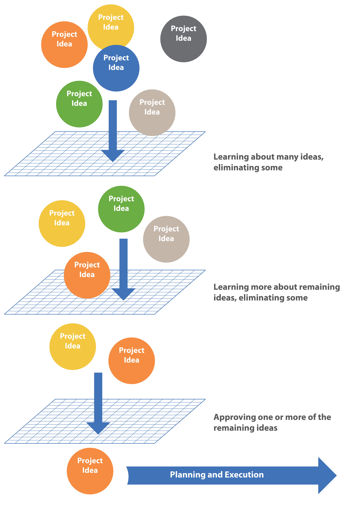

Strategy is making trade-offs in competing.
The essence of strategy is choosing what not to do.
— Michael E. Porter, “What is Strategy?” (1996)

Objectives
After reading this lesson, you will be able to
The Big Ideas in this Lesson
Effective project management and execution start with choosing the right projects. While you might not have control over which projects your organization pursues, you do need to understand why your organization chooses to invest in particular projects so that you can effectively manage your projects and contribute to decisions about how to develop and, if necessary, terminate a project. Your study of technical project management will primarily focus on doing things the right way. In this lesson, we’ll concentrate on doing the right thing from the very beginning.
As always, it’s helpful to start with some basic definitions:
As shown in Figure 2-1, a portfolio is made up of programs and projects. An organization’s strategy is the game plan for ensuring that the organization’s portfolios, programs, and projects are all directed toward a common goal.

Many books and articles attempt to explain what the term “strategy” really means. But in the end, as Mark Morgan, Raymond E. Levitt, and William Malek explain in Executing Your Strategy: How to Break it Down & Get it Done, an organization’s strategy is defined by what the organization invests in—that is, what the organization does: “the best indicator of strategic direction and future outcomes is an enterprise-wide look at what the company is doing rather than what it is saying—what the strategy makers are empowering people at the execution level to accomplish” (2007, 3).
An organization without a clearly defined strategy can never expect to navigate the permanent whitewater of living order. This is especially if the strategy is motivated by the organization attempting to push its vision onto customers, rather than pulling the customer’s definition of value into its daily operations . An organization’s strategy is an expression of its mission and overall culture. In a well-run company, every decision about a project, program, or portfolio supports the organization’s strategy. The strategy, in turn, defines the company’s portfolio and day-to-day operations. Projects and their budgets flow out of the organizational strategy. Morgan et al. emphasize the importance of aligning a company’s portfolio with its strategy:
Without clear leadership that aligns each activity and every project investment to the espoused strategy, individuals will use other decision rules in choosing what to work on: first in, first out; last in, first out; loudest demand; squeakiest wheel; boss’s whim; least risk; easiest; best guess as to what the organization needs; most likely to lead to raises and promotion; most politically correct; wild guess—or whatever they feel like at the time. Portfolio management still takes place, but it is not necessarily aligned with strategy, and it occurs at the wrong level of the organization. (2007, 5)
As a project manager, you should be able to refer to your organization’s strategy for guidance on how to proceed. You should also be able to use your organization’s strategy as a means of crossing possibilities off your list. Michael E. Porter, author of the hugely influential book Competitive Strategy, explains that strategy is largely a matter of deciding what your organization won’t do. In an interview with Fast Company magazine, he puts it like this:
The essence of strategy is that you must set limits on what you’re trying to accomplish. The company without a strategy is willing to try anything. If all you’re trying to do is essentially the same thing as your rivals, then it’s unlikely that you’ll be very successful. It’s incredibly arrogant for a company to believe that it can deliver the same sort of product that its rivals do and actually do better for very long. That’s especially true today, when the flow of information and capital is incredibly fast. (Hammonds 2001)
Ultimately, strategy comes down to making trade-offs. It’s about “aligning every activity to create an offering that cannot easily be emulated by competitors” (Porter 2001). Southwest Airlines, which has thrived while most airlines struggle, is often hailed as an example of a company with a laser-like focus on a well-defined strategy. Excluding options from the long list of possibilities available to an airline allows Southwest to focus on doing a few things extremely well—specifically providing reliable, low-cost flights between mid-sized cities. As a writer for Bloomberg View puts it:
By keeping the important things simple and implementing them consistently, Southwest manages to succeed in an industry better known for losses and bankruptcies than sustained profitability. Yet none of this seems to have gone to the company’s head, even after 40 years. As such, the airline serves as a vivid—and rare—reminder that size and success need not contaminate a company’s mission and mind-set, nor erode the addictive enthusiasm of management and staff. (El-Erian 2014)
In his writings on strategy, Michael Porter takes pains to distinguish between strategy and operational effectiveness—getting things done faster and more cheaply than competitors. Managers tend to confuse these two very different things. A well-defined strategy focuses on what sets an organization apart from the competition—what it can do uniquely well. Operational effectiveness—working faster and cutting costs and then cutting them again—is a game anyone can play. But it’s not viable over the long term because competitors will always catch up:
It’s extremely dangerous to bet on the incompetence of your competitors—and that’s what you’re doing when you’re competing on operational effectiveness.
What’s worse, a focus on operational effectiveness alone tends to create a mutually destructive form of competition. If everyone’s trying to get to the same place, then, almost inevitably, that causes customers to choose on price. (Hammonds 2001)
Porter published Competitive Strategy in 1980. Since then the business world has changed considerably, becoming faster paced, with more projects unfolding in living order. Some suggest that, in an environment of constant change, picking one strategy and sticking to it is a recipe for disaster. Porter argues that the opposite is true. The secret is to focus on “high-level continuity” that coordinates the assimilation of change:
The thing is, continuity of strategic direction and continuous improvement in how you do things are absolutely consistent with each other. In fact, they’re mutually reinforcing. The ability to change constantly and effectively is made easier by high-level continuity. If you’ve spent 10 years being the best at something, you’re better able to assimilate new technologies. The more explicit you are about setting strategy, about wrestling with trade-offs, the better you can identify new opportunities that support your value proposition. Otherwise, sorting out what’s important among a bewildering array of technologies is very difficult. Some managers think, “The world is changing, things are going faster—so I’ve got to move faster. Having a strategy seems to slow me down.” I argue no, no, no—having a strategy actually speeds you up. (Hammonds 2001)
As you learned in Lesson 1, the Lean approach to project management focuses on eliminating waste and maximizing customer value. It is primarily a means of streamlining operational effectiveness, but it also offers major strategic benefits. In a truly Lean organization, managers have the time and autonomy to focus on high-level issues. The emphasis on flexibility makes it easier for a Lean organization to pivot to new opportunities that align with the organization’s strategy. In an article for Planet Lean, Michael Ballé explains:
Lean is often reduced to a manufacturing tactic because it doesn’t fit the frame of traditional strategy. Lean can’t tell you which niche to pursue, it can’t help you build a roadmap, and it won’t tell you what reasonable objectives are or how to incentivize people to get them.
Lean, however, is the key to creating dynamic strategies built on more mindful care of customers, more dynamic objectives (reduce the waste by half every year), faster learning, greater involvement of all people all the time for stronger morale, more determined focus on higher-level goals and quicker exploitation of unexpected opportunities. (2016)
According to Ballé, a Lean strategy might look like this:
Because implementing Lean effectively requires a buy-in from an entire organization, with everyone from the top down learning to think Lean, succeeding with Lean is difficult. That means the organizations that do succeed have something rare to offer their customers, setting them apart from the competition. In other words, converting an organization to Lean methodologies can be a strategy in and of itself. Truly Lean organizations are first and foremost learning organizations, with a focus on learning everything possible about the market and their customers’ needs. This makes them vastly superior at supplying the value customers want.
In their book The Lean Strategy, Ballé, Jones, Chaize, and Fiume make the case for Lean as something more than a means toward operational effectiveness. They see it as a true strategy:
Lean strategy represents a fundamentally different approach: seeing the right problems to solve, framing the improvement directions such that every person understands how he or she can contribute, and supporting learning through change after change at the value-adding level in order to avoid wasteful decisions. Sustaining an improvement direction toward a North Star and supporting daily improvement to solve global challenges make up a strategy, and a winning one. (2017, x)
Despite the clear advantages of creating and sticking with a strategy, organizations and individual managers have difficulty doing so:
Corporations spend about $100 billion a year on management consulting and training, most of it aimed at creating brilliant strategy. Business schools unleash throngs of aspiring strategists and big-picture thinkers into the corporate world every year. Yet studies have found that less than 10 percent of effectively formulated strategies carry through to successful implementation. So something like 90 percent of companies consistently fail to execute strategies successfully. (Morgan, Levitt and Malek 2007, 1)
Why is executing a strategy so difficult? According to Porter, one problem is that managers often mistakenly think that making tradeoffs is a sign of weakness:
Trade-offs are frightening, and making no choice is sometimes preferred to risking blame for a bad choice…. The failure to choose sometimes comes down to the reluctance to disappoint valued managers or employees. (Porter 1996)
As the Nobel Prize winning economist Herbert Simon demonstrated, in many situations, it is not realistic or even possible to collect all the information necessary to determine the optimal solution. He uses the word satisfice (a combination of satisfy and suffice) to describe a more realistic form of decision-making, in which people accept “the ‘good-enough’ solution rather than searching indefinitely for the best solution” (Little 2011). In order to stay true to its strategy, a successful organization will often choose to satisfice, instead of optimize.
Organizations are also very susceptible to the sunk cost fallacy, which is the tendency “to continue investing in a losing proposition because of what it’s already cost…” (Warrell 2015). Managers will often shy away from making alterations to the organization’s strategy if such alterations necessitate cutting projects that have already received significant investment—even if the projects themselves are widely considered to be failures. At the same time, corporations have to consider how killing a project will affect its earnings. As a result, project managers, fearing they’ll be pinned with responsibility for driving down their company’s stock price, refuse to kill projects they know have no chance of succeeding.
As an example, let’s consider how killing a project might play out in the IT world, as explained by David Pagenkopf:
Most of the work to implement an IT project for internal use must be capitalized, with the cost amortized over the expected life of the software (typically, five years). However, if an IT project is terminated, then the entire cost of the project must be expensed that year. That won’t affect the organization’s cash-flow, but it could materially affect the income statement for that year. For large, multi-year projects, a major write-off can drive net income to a loss and devastate the stock price. In short order, the project manager and the sponsor will likely be looking for a new job. So it’s no surprise people tend to “kick the can” down the road, which of course only magnifies the eventual problem.
I once had this problem in a portfolio of projects I inherited when starting a new job. After firing both the internal project manager and the contractor project manager, I had to find a way to put lipstick on a pig and get some value from the project to avoid a write-down. (Note: It is never good when the CFO of a Fortune 500 company has direct interest in an IT project.) My point is that people sometimes continue to make poor investment decisions not because they don’t know better, but rather to buy time, or to escape, sometimes by shifting the blame to someone else.[1]
Projects are the way organizations operationalize strategy. In the end, executing a strategy effectively means pursuing the right projects. In other words, it’s a matter of aligning projects and initiatives with the company’s overall goals. And keep in mind that taking a big-picture, long-term approach to executing a new organizational strategy requires a living order commitment to a certain amount of uncertainty in the short term. It can take a while for everyone to get on board with the new plan, and in the meantime operations may not proceed as expected. But by keeping your eye on the North Star of your organization’s strategy, you can help your team navigate the choppy waters of change.
Project selection proceeds on two levels: the portfolio level and the project level. On the portfolio level, management works to ensure that all the projects in a portfolio support the organization’s larger strategy. In other words, management focuses on optimizing its portfolio of projects. According to Morgan et al., portfolio optimization is “the difficult and iterative process of choosing and constantly monitoring what the organization commits to do” (2007, 167).
Morgan et al. see portfolio management as the heart and soul of pursuing a strategy effectively:
Strategic execution results from executing the right set of strategic projects in the right way. It lies at the crossroads of corporate leadership and project portfolio management—the place where an organization’s purpose, vision, and culture translate into performance and results. There is simply no path to executing strategy other than the one that runs through project portfolio management. (2007, pp. 4-5)
To manage portfolios effectively, large organizations often use scenario-planning techniques that involve sophisticated quantitative analysis. One such technique is based on the knapsack problem, a classic optimization problem. Various items, each with a weight and a value are available to be placed in a knapsack. As shown in Figure 2-2, the challenge is to choose the types and numbers of items that can be fit into the knapsack without exceeding the weight limit of the knapsack. Portfolio managers are faced with a similar challenge: choosing the number and types of projects, each with a given cost and value, to optimize the collective value without exceeding resource availability.
On the project level, teams focus on selecting, refining, and then advancing or, if necessary, terminating individual projects. Some compliance-related projects have to be completed no matter what. But companies typically generate far more ideas for new projects than they can reasonably carry out. So to optimize its portfolio, every organization needs an efficient process for capturing, sorting, and screening ideas for new projects, and then for approving and prioritizing projects that are ultimately green-lighted. We’ll look at some project-selection methods shortly. But first, let’s look at some things that influence project selection.
In any organization, project selection is influenced by the available resources. When money is short, organizations often terminate existing projects and postpone investing in new ones. For example, in 2015, the worldwide drop in oil prices forced oil companies to postpone $380 billion in projects, such as new deep-water drilling operations (Scheck 2016).
An organization’s project selection process is also influenced by the nature of the organization. At a huge aerospace technology corporation, for example, the impetus for a project nearly always comes from the market, and is loaded with government regulations. Such projects are decades-long undertakings, which necessarily require significant financial analysis. At a consumer products company, the idea for a project often originates inside the company as a way to respond to a perceived consumer demand. In that case, with less time and fewer resources at stake, the project selection process typically proceeds more quickly.
Size is a major influence on an organization’s project selection process. At a large, well-established corporation, the entrenched bureaucracy can impede quick decision-making. By contrast, a twenty-person start-up can make decisions quickly and with great agility.
Keep in mind that along with the customer’s definition of value comes the customer’s definition of the amount of risk he or she is willing to accept. As a project manager, it’s your job to help the customer understand the nature of possible risks inherent in a project, as well as the options for and costs of reducing that risk. It’s the rare customer who is actually willing or able to pay for zero risk in any undertaking. In some situations, the difference between a little risk and zero risk can be enormous. This is true, for instance, in the world of computer networking, where a network that is available 99.99% of the time (with 53 minutes and 35 seconds of down time a year) costs much less than a network that is 99.999% available (with only 5 minutes and 15 seconds of down time a year) (Dean 2013, 645). If you’re installing a network for a small chain of restaurants, shooting for 99.99% availability is a waste of time and money. By contrast, on a military or healthcare network, 99.999% availability might not be good enough.
Identifying the magnitude and impact of risks, as well as potential mitigation strategies, are key elements of the initial feasibility analysis of a project. Decision-makers will need that information to assess whether the potential value of the project outweighs the costs and risks. Risk analysis will be addressed further in Lesson 8. For some easy-to-digest summaries of the basics of risk management, check out the many YouTube videos by David Hillson, who is known in the project management world as the Risk Doctor. Start with his video named “Risk management basics: What exactly is it?”
Organizations that lack an effective project selection process typically struggle with four major portfolio-related issues. In an article for Research Technology Management, Robert G. Cooper, Scott J. Edgett, and Elko J. Kleinschmidt describe these issues as follows:
These problems can lead to a host of related issues. One common issue is related to capacity, which is defined as follows:
Capacity is the maximum level of output that a company can sustain to make a product or provide a service. Planning for capacity requires management to accept limitations on the production process. No system can operate at full capacity for a prolonged period; inefficiencies and delays make it impossible to reach a theoretical level of output over the long run. (Investopedia n.d.)
While it might sound desirable for an organization to be running at full capacity, using every available resource, in fact such a situation usually leads to log jams, making it impossible for projects to proceed according to schedule. It’s essential to leave some capacity free—typically 20% to 30% is considered desirable–for managing resources and dealing with the inevitable unexpected events that arise in living order. Attempting to execute too many projects, and therefore using up too much capacity, can generate the following problems:
No matter the speed at which its project selection process plays out, successful organizations typically build in a period of what Scott Anthony calls “staged learning,” in which the project stakeholders expand their knowledge of potential projects. In an interesting article in the Harvard Business Review, Anthony compares this process to the way major leagues use the minor leagues to learn more about the players they want to invest in. In the same way, consumer product companies use staged learning to expose their products to progressively higher levels of scrutiny, before making the final, big investment required to release the product to market (Anthony 2009).
You can think of the project selection process as a series of screens that reduce a plethora of ideas, opportunities, and needs to a few approved projects. From all available ideas, opportunities, and needs, the organization selects a subset that warrant consideration given their alignment with the organization’s strategy. As projects progress, they are subjected to a series of filters based on a variety of business and technical feasibility considerations. As shown in Figure 2-3, projects that pass all screens are refined, focused, and proceed to execution.

This same concept is applied in Stage-Gate™ or phase-gate models, in which a project is screened and developed as it passes through a series of stages/phases and corresponding gates. During each stage/phase, the project is refined, and at each gate a decision is required as to whether the project warrants the additional investment needed to advance to the next stage/phase of development. “The typical Stage-Gate new product process has five stages, each stage preceded by a gate. Stages define best-practice activities and deliverables, while gates rely on visible criteria for Go/Kill decisions” (Cooper, Edgett and Kleinschmidt 2000).
This approach is designed to help an organization make decisions about projects about which very limited knowledge is available at the outset. The initial commitment of resources is devoted to figuring out if the project is viable. After that, you can decide if you are ready to proceed with detailed planning, and then, whether to implement the project. This process creates a discipline of vetting each successive investment of resources and allows safe places to kill the project if necessary.
Another approach to project selection, set-based concurrent engineering,avoids filtering projects too quickly, instead focusing on developing multiple solutions through to final selection just before launch. This approach is expensive and resource-hungry, but its proponents argue that the costs associated with narrowing to a single solution too soon—a solution that subsequently turns out to be sub-optimal—are greater than the resources expended on developing multiple projects in parallel. Narrowing down rapidly to a single solution is typical of many companies in the United States and in other western countries. Japanese manufacturers, by contrast, emphasize developing multiple options (even to the point of production tooling). For more on set-based project selection, see this article in MIT Sloan Management Review: “Toyota’s Principles of Set-Based Concurrent Engineering.”
In an article for the International Project Management Association, Joni Seeber discusses some general project selection criteria. Like Michael Porter, she argues that first and foremost, you should choose projects that align with your organization’s overall strategy. She suggests a helpful test for determining whether a project meaningfully contributes to your organization’s strategy:
A quick and dirty trick to determining the meaningfulness of a project is answering the question “So what?” about intended project outcomes. The more the project aligns with the strategic direction of the organization, the more meaningful. The higher the likelihood of success, the more meaningful.
To illustrate, developing a vaccine for HIV is meaningful; developing a vaccine for HIV that HIV populations cannot afford is not. Size matters as well since the size of a project and the amount of resources required are usually positively correlated. Building the pyramids of Egypt may be meaningful, but the size of the project makes it a high stakes endeavor only suitable to pharaohs and Vegas king pins. (2011)
Seeber also suggests focusing on projects that draw on your organization’s core competencies:
Core competencies are offerings organizations claim to do best. An example of a core competency for Red Cross, for example, would be international emergency disaster response. Projects based on core competencies usually achieve outcomes with the best value propositions an organization can offer and, therefore, worthwhile for an organization to map its core competencies and select projects that build on strength. (2011)
For more ideas on project selection criteria, see this video, recommended by Seeber in her article: “Project Selection Criteria.” This article summarizes the problems that arise when organizations attempt to respond to every customer request by launching new projects willy nilly, thereby exceeding its overall capacity: “Saying ‘No’ to Customers.”
A cognitive bias is an error in thinking that arises from the use of mental shortcuts known as heuristics. As Amos Tversky and Daniel Kahneman demonstrated in their ground-breaking study of decision-making, we all use heuristics to quickly size up a situation (1974). For example, we might use the availability heuristic to refer to the first similar situation that comes to mind, and then, using that situation as a reference, make judgements about the current situation. While that can be effective, it can also lead to misconceptions and illusions known as cognitive biases. Just because something readily comes to mind does not mean it is relevant to your current situation.
When making an important decision, watch out for these common cognitive biases:
Take some time to read up on the topic, starting with this overview of well-documented cognitive biases: “20 Cognitive Biases That Screw Up Your Decisions.”
The more screens or gates a project passes through, the more you learn. Eventually, what you learn about the project might lead you to conclude the project is not viable. By this point, however, people have become invested in the project. They naturally want it to succeed and are therefore unable to perceive the downsides clearly. In other words, they suffer from a cognitive bias known as groupthink, which causes people to adopt a belief because a significant number of people already hold that belief.
This problem can be exacerbated if an especially forceful or charismatic person has taken on the role of the project’s chief advocate, or project champion, in the early stages of evaluation. If the project champion then transitions into becoming the project manager, killing the project can be even harder, once the project manager becomes absorbed in the technical details and loses track of the larger organizational issues (Kerzner and Kerzner, 24).
At this point, it is often wise to appoint an exit champion, or a manager who is charged with advocating the end of a project if he or she thinks that is in the best interests of the organization, regardless of the desires of the project team members. Even if your organization doesn’t allow for an officially designated exit champion, it probably has some sort of project selection process that includes points at which a project can be killed. As a project manager, you need to understand that process, follow it carefully, and make sure everyone involved feels free to say the words “We need to kill this project.”
When deciding whether to kill a project, pay attention to the following red flags, which, according to Joni Seeber, often signal a poorly conceived project:
In Lesson 13, we’ll focus on auditing, the systematic evaluation of a project designed to help a team decide whether to proceed or call it quits.
Anthony, Scott. 2009. “Major League Innovation.” Harvard Business Review, October. https://hbr.org/2009/10/major-league-innovation.
Ballé, Michael. 2016. “Can lean support strategy as much as it does operations?” Planet Lean, February. http://planet-lean.com/can-lean-support-strategy-as-much-as-it-does-operations.
Ballé, Michael, Daniel Jones, Jacque Chaize, Orest Fiume. 2017. The Lean Strategy: Using Lean to Create Competitive Advantage, Unleash Innovation, and Deliver Sustainable Growth. New York: McGraw-Hill Education.
BusinessDictionary.com. n.d. “Operational effectiveness.” BusinessDictionary. Accessed July 29, 2018. http://www.businessdictionary.com/definition/operational-effectiveness.html
Cooper, Dr. Robert G., Dr. Scott J. Edgett, and Dr. Elko J. Kleinschmidt. 2000. “New Problems, New Solutions: Making Portfolio Management More Effective.” Research Technology Management, 43 (2). http://www.stage-gate.net/downloads/working_papers/wp_09.pdf
Dean, Tamara. 2013. Network+ Guide to Networks, Sixth Edition. Boston: Course Technology.
El-Erian, Mohamed A. 2014. “The Secret to Southwest’s Success.” Bloomberg View, June 13. http://www.bloombergview.com/articles/2014-06-13/the-secret-to-southwest-s-success.
Foley, Ryan J. 2006. “$26 Million Software Scrapped by UW System: Officials Regret the Loss But Believe A Different Vendor Will Prove Better In the Long Run.” Wisconsin State Journal, July 6. http://host.madison.com/news/local/million-software-scrapped-by-uw-system-officials-regret-the-loss/article_d719f8a3-a718-59c6-8159-b3c27e23bf65.html.
Hammonds, Keith H. 2001. “Michael Porter’s Big Ideas.” Fast Company, February 28. https://www.fastcompany.com/42485/michael-porters-big-ideas.
Investopedia. (n.d.). Investopedia. Retrieved August 12, 2016, from http://www.investopedia.com
Kerzner, Harold, and Harold R. Kerzner. 2013. Project Management: A Systems Approach to Planning, Scheduling, and Controlling. Hoboken: John Wiley & Sons.
Little, Daniel. 2011. “Herbert Simon’s Satisficing Life.” Understanding Society. January 30. http://understandingsociety.blogspot.com/2011/01/herbert-simons-satisficing-life.html.
Morgan, Mark, Raymond E. Levitt, and William A. Malek. 2007. Executing Your Strategy: How to Break It Down and Get It Done. Boston: Harvard Business School Publishing.
Porter, Michael E. 1996. “What is Strategy?” Harvard Business Review, November-December. https://hbr.org/1996/11/what-is-strategy.
—. 2001. “Manager’s Journal: How to Profit From a Downturn.” Wall Street Journal, Eastern edition, November 12.
Scheck, Justin. 2016. “Oil Route Forces Companies to Delay Decisions on $380 Billion in Projects.” Wall Street Journal, January 14. http://www.wsj.com/articles/oil-rout-forces-companies-to-delay-decisions-on-380-billion-in-projects-1452775590.
Seeber, Joni. 2011. “Project Selection Criteria: How to Play it Right.” International Project Management Association. http://www.ipma-usa.org/articles/SelectionCriteria.pdf.
SmartSheet. n.d. “What Is New Product Development?” SmartSheet. Accessed July 25, 2018. https://www.smartsheet.com/all-about-new-product-development-process.
Tversky, Amos, and Daniel Kahneman. 1974. “Judgment under Uncertainty: Heuristics and Biases.” Science 185 (4157): 1124-1131.
Warrell, Margie. 2015. “Sunk-Cost Bias: Is It Time To Call It Quits?” Forbes. http://www.forbes.com/sites/margiewarrell/2015/09/14/sunk-cost-bias-is-it-time-to-move-on/#129648a860ee.